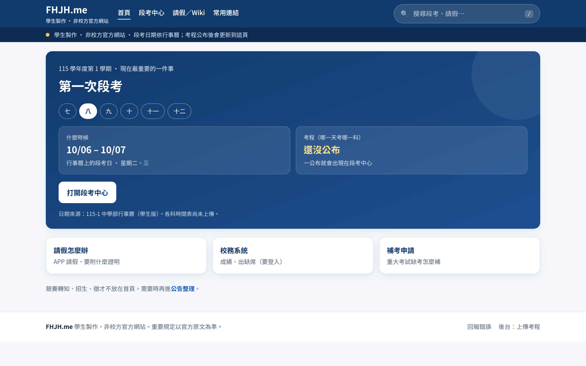
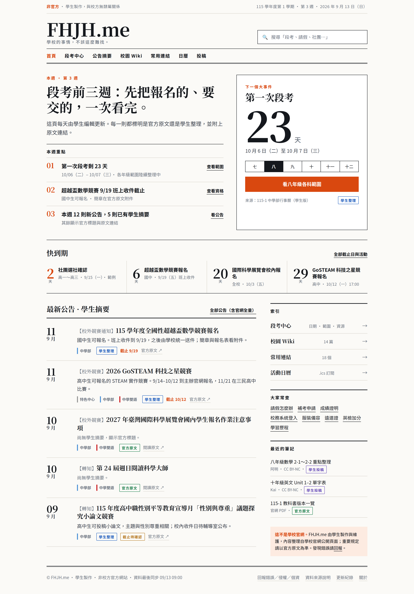
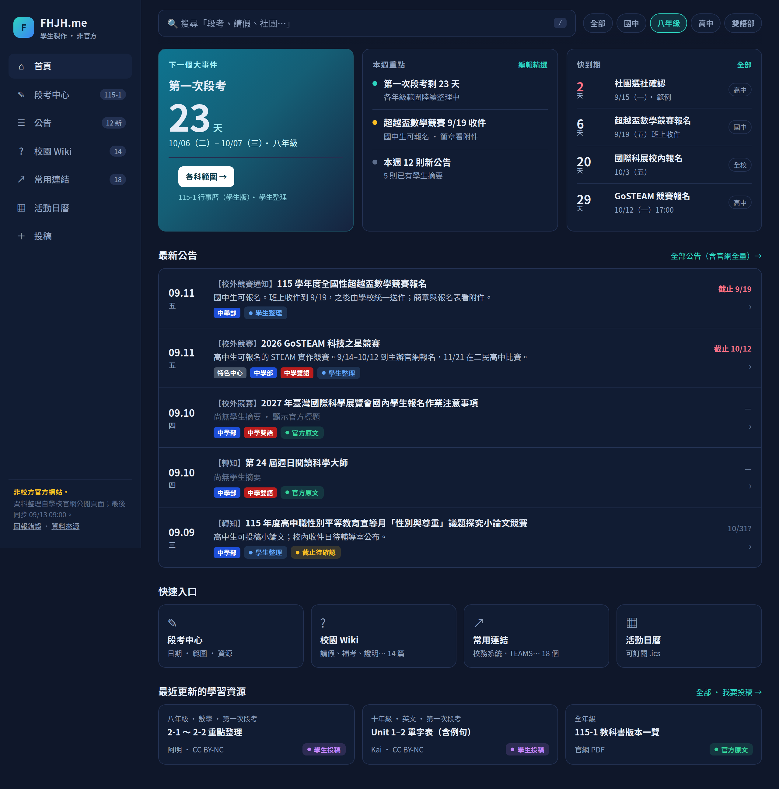

A. 資訊儀表板
白底、深藍。首頁只回答「第一次段考何時、考程在哪」。考程未公布就顯示等待；競賽轉知不佔版面。手機改為頂欄圖示＋底欄。

同一套資訊架構（本週重點、段考倒數、快到期、公告摘要、來源徽章），做成三個視覺方向。內容都是真實官網近期公告改寫，方便直接比較。
白底、深藍。首頁只回答「第一次段考何時、考程在哪」。考程未公布就顯示等待；競賽轉知不佔版面。手機改為頂欄圖示＋底欄。

報紙／校刊版面：襯線標題、雙線頁眉、編號重點。比較不像「入口網站」，也比較不像校方官網。適合強調「學生編輯每天整理」。

深色側欄＋底部導覽，像生產力 App。年級可在頂部切換。適合「回家打開查一件事就走」；也最不會被誤認成校方網站。

| A 儀表板 | B 校刊 | C App | |
|---|---|---|---|
| 第一印象 | 清楚、可信、偏工具 | 有編輯氣味、好讀 | 現代、不像官網 |
| 資訊密度 | 中 | 中高（長文） | 中（側欄省空間） |
| 手機 | 單欄卡片 | 長文捲動 | 底欄五個入口 |
| 被誤認官方的風險 | 中（深藍） | 低 | 最低 |
| 第一版開發成本 | 最低 | 中（版面細節多） | 中（深色＋側欄） |